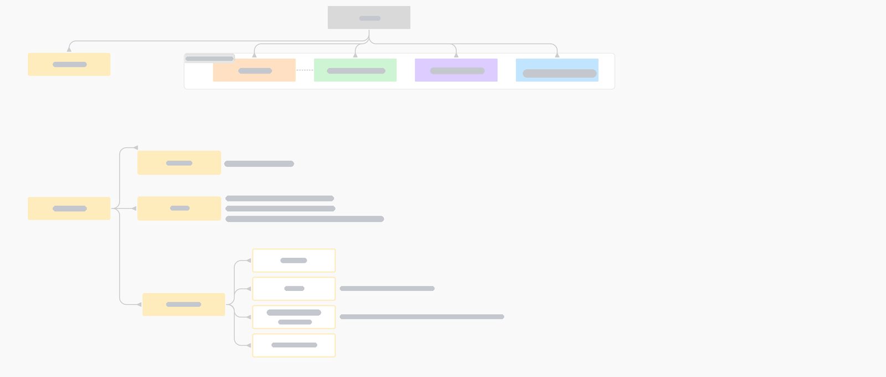
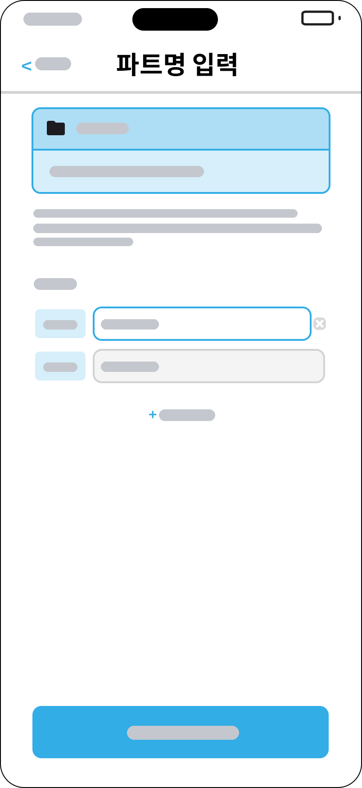

Key cases
Four cases showing decisions I made and why. Click a title to see the project details.
-
An order number alone couldn't show a different status for each box, so I started by defining how to link the order number and item line number to a box.
I planned the integration after watching an operations staff member download wholesale mall orders as Excel files and type them into our admin by hand. Orders where only some boxes are picked up map to the mall's existing “partially shipped” status, and postponed pickups got a separate status. After development, I compared API responses with the screens on both sides and logged two bugs in QA: orders near a time boundary were being missed, and shipping info was applied only to the first box.
My role: sync rules, data checks, QA tickets / Built by: the dev team / Result: the staff member's manual entry for this task dropped from about 1 hour to 10 minutes a day (based on my own check).
-
I asked the developers and designers what kind of document worked best for them, then made a functional spec template split into inputs, outputs, API spec, rules and edge cases.
Early on, I could only explain the user flow and what the finished feature should do, so I got a lot of “why?” questions. After changing the template, I also wrote out each case branch, and the questions turned into “Is it OK if we do it this way?” The developers and designers I worked with told me it was easy to work from, because the decisions they had to make during implementation were already in the docs.
My role: wrote the planning docs, checked the backend ERD against the planning rules / Built by: the dev team
-
I worked with the team to keep the character and acorn elements on screen while adjusting the feature scope to fit the launch schedule.
The designers wanted to preserve the character and acorn elements, while the developers needed to complete the core learning features in time for launch. I helped the team agree on a way to retain those visual elements and decide which features to include in the first release and which to address later.
My role: PM and product planning, launch scope / Built by: the dev team / Result: launched on the App Store and Google Play (team result)
-
While checking the screens, I noticed that for reports with no known publication date, the upload date was shown as if it were the publication date. I changed it so an unknown date stays blank and the user enters it.
When the model can't find a publication date, it leaves it blank, but the screen was showing the upload date in its place. That fallback was removed so it shows “Published -”, and added a way to edit the publication date. I write each task with a goal, scope, edge cases and done criteria; once the AI coding tool builds it, I check it again on my local screen.
My role: planning and verification, solo / Built with: AI coding tools / Status: personal use (not released)
Planning process
For a new feature, I work in the order below. When working in an agile way, I keep the scope short, one core feature at a time, and repeat the same steps.
- Understand the problem and usersWhen I help users remotely or watch staff at work, I look for the step where they get stuck.
- Decide scope and flowI set the core features and user flow, and use the same MoSCoW priority labels across the PRD, wireframes, specs and work order.
- Specify rules and edge casesI write inputs, outputs, API spec, rules, edge cases and case branches into the functional spec.
- Work out implementationI check the ERD made by the backend developer against the planning rules and give feedback, and send designers the changes for each screen ID.
- Check and improveI compare what was built with the data and screens and log issues in QA. Improvements from user testing and early operations go into the next phase.
What made the first version, and what could wait? Five planning documents, from PRD to wireframe
A short Markdown summary of MarketDesk's planning, plus Figma template samples from Quiket. I write them in this order: PRD → IA → user flow → functional spec → wireframe: and at each step check that the new doc matches the ones before it.
PRD · MarketDesk
Finding what matters after reading an industry report
I started MarketDesk while studying the economy. Even one report was a long read. To connect a change in an industry with a company I had read about earlier, I had to reopen the older reports.
- Primary persona · job seeker preparing for a product role
- They read industry reports to understand a prospective employer. A general summary still leaves them asking what the change means for that company’s products or business. They want to find the passages relevant to their role and revisit the evidence in the original report.
- Secondary persona · individual investor following a company
- They follow the same industry across several reports. Today’s summary alone makes it hard to see which figures or assumptions have changed since last month. They want to compare dated evidence across a month.
- First-version scope
- Readers upload a PDF or text and save separate summaries for the career and investment perspectives they select. Career readers can also choose a role. The monthly view draws on daily entries for the same industry. Figures or forecasts absent from the source stay blank. Image input and annual reviews were deferred.
- Hypotheses to test
- If readers find the role-specific summary useful, they should return with their next report. If the accumulated entries reveal a trend, readers should open the monthly view. The PRD proposes seven-day return rate and monthly view usage as measures. I use the tool myself. Both measures still need validation.
IA
Figma sample Quiket · template with content removed

Markdown sample MarketDesk · public summary
# IA: MarketDesk
- Home: my industry list
- Industry: semiconductors / AI / automotive, etc.
- Document type: industry report / company report / economic news
- Input format: PDF / text
- Lens: job hunting (pick a role) / stock investing reference: multiple choice
- Views over time
- Daily: that day's document summaries and source pages
- Monthly: this month's trend, built from daily summaries
- Yearly: annual review: phase 2 scopeUser flow
Figma sample Quiket · public redraw of the branching diagram

Markdown sample MarketDesk · public summary
# User flow: MarketDesk
## Main flow
Log in → pick lenses on first use → dashboard
→ pick an industry → upload a PDF
## Text extraction
- Success: parse, then structured summary per lens
- Failure (scanned file): guide to the OCR path, then parse
## Source check for key numbers
- Source found: summary review screen
- Source unclear: mark as "not stated", then summary review screen
## Save
User reviews and edits → save to daily → added to the daily viewFunctional spec: sample for the lens-based summary feature
| F07 Structured summary per lens | Details |
|---|---|
| Description | Extract content for each selected lens using a fixed template (new business · existing business · overseas · key numbers · insights) |
| Input | Document with page markers, list of selected lenses |
| Output | Summary per lens (JSON), shown as lens tabs on the summary review screen |
| Rules | A lens changes only the viewpoint; the template stays the same. Parse once, store each lens's result separately |
| API | POST /reports/{id}/extract |
| Edge cases | If the model is slow or errors out, retry and keep partial results |
Wireframe: Quiket template samples
Screen structure and icons are kept, and content is replaced with gray bars. Click an image to see it larger.

Only the screen name, “Enter part name,” is kept.

Body text and button labels replaced with gray bars.

The layout of the answer status and explanation areas is kept.
Collaboration
I pass on the rules, edge cases and decisions needed to build something in a form that suits each person, and follow up until it's actually being used.
| Who | What I gave them |
|---|---|
| Designers | Screen IDs and what to remove, add or change |
| Developers | Inputs and outputs, API and DB names, rules and edge cases. Feedback on the backend ERD after checking it against the planning rules |
| CEO | Core features and the open issues that needed a decision |
| Operations staff | Explanations of the calculation rules, plus guides for using and checking the feature |
| Partner companies | Answers to questions about sign-up, integration and terms of use; internal and external guides and training materials |
- Running meetings: Quiket was a 7-person side project where everyone had a full-time job. I fixed meetings to Sunday nights every week and decided in advance who had to attend for each agenda item. Apart from the first brainstorming meeting, every meeting ended within 30 minutes.
- Meeting notes. After a meeting, I write down what we decided, which questions are still open and what to do next. At the next meeting, I start with those open questions.
- When opinions split: On EDU:UP (a 4-person bootcamp team), someone suggested right before the presentation that we keep only what the backend had implemented. I proposed keeping the screens central to our problem definition, even if only with mock data. We kept some of them and presented a table of the original design, the current stand-in implementation and the next sprint plan.
- Getting it actually used: Even after the payslip feature shipped, staff didn't use it because they worried the calculations might be wrong. I put the screen up in a meeting, walked through the calculation rules and shared a guide for using and checking it. After that, it started being used for real internal payroll.
Development
Frontend (FE)
I built the frontend for an ad review service in React and TypeScript. Reviewers can zoom in on the original image, compare it with the extracted text and correct a misread word on the spot. I also fixed a bug that sent ads for review before the upload finished. My work on the review interface
Backend (BE)
While testing TaxDesk, I found that the service treated missing income as zero and returned a tax figure. I put the Spring Boot server in charge of looking up income, determining tax status and calculating the amount. When a required amount is missing, the server asks for it. I repeated the case with a mock model and confirmed that the calculation stopped. TaxDesk’s calculation flow and tests
AI
For the ad review service, I connected optical character recognition (OCR) to a vision-language model (VLM) that reads the wording alongside the image. My code checks each supporting quote against the line the model cited. Only quotes that match a single location go on to review. I tested the VLM integration locally with synthetic ads. How I connected OCR and the VLM
Infrastructure
I practiced Docker deployment with ClassTrack, my course and assignment tracker. I separated the build and runtime stages, built the container image and deployed it. For my personal email digest bot, I scheduled a GitHub Actions workflow to send the summary to Discord every morning.
Other ways I use AI
- Reviewing a spec. I ask which parts might confuse a user, developer or designer. I read through the responses and decide what needs a revision.
- Working with coding tools. I write down edge cases and acceptance criteria before implementation. After the tool runs its first tests, I open the app locally and check those cases myself.
- Organizing prompts. I keep the prompts I use for slide decks and reports in Template Hub, organized by document type so I can use them again.
I keep tool settings and verification steps in Dev Notes.